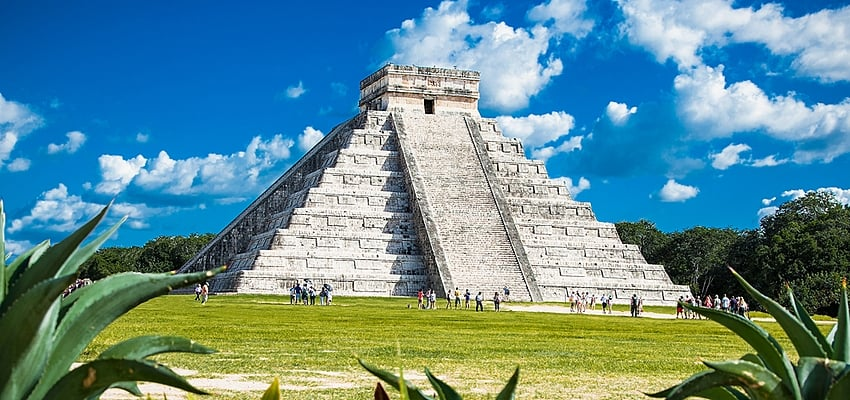

chichen itza

Chichén Itzá es un complejo de ruinas mayas famoso a nivel mundial en la península de Yucatán de México. Una enorme pirámide escalonada, conocida como El Castillo, domina los 6.5 km cuadrados de la ciudad antigua, que prosperó desde aproximadamente el año 600 d.C. hasta el siglo XIII.